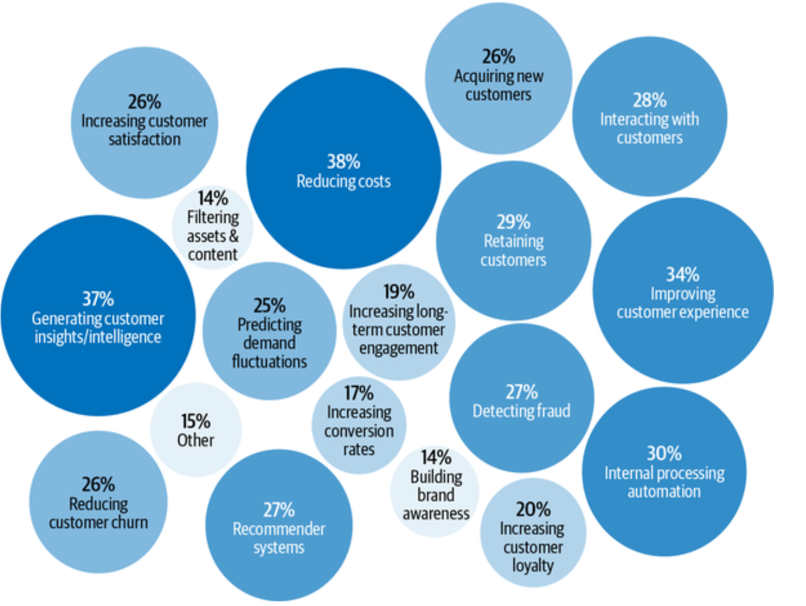
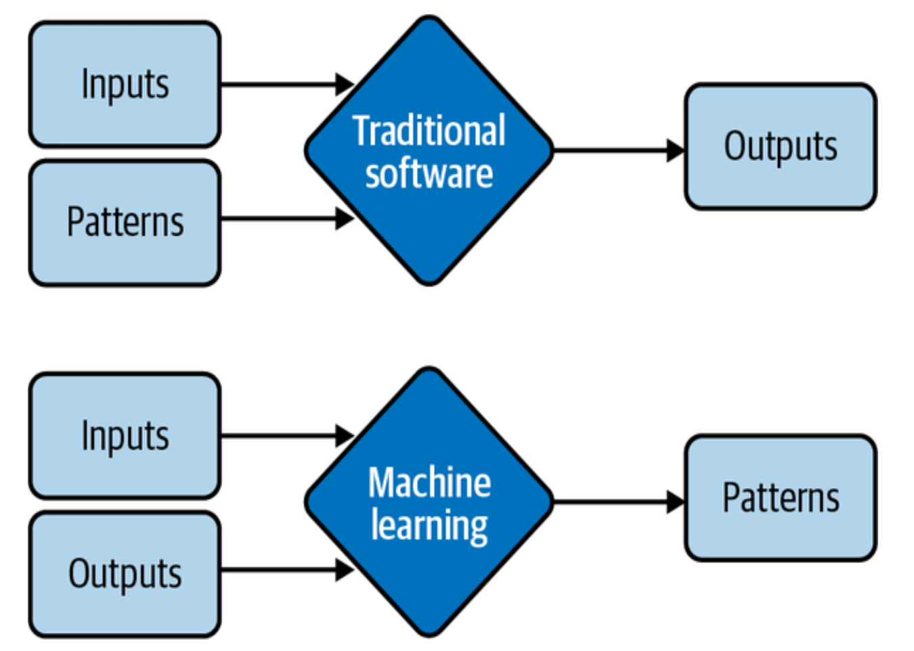
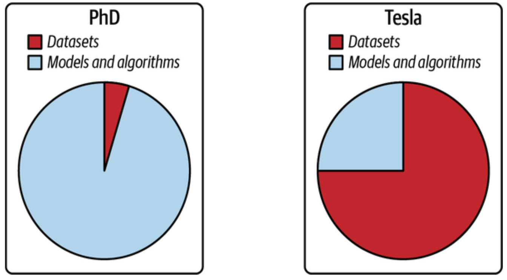
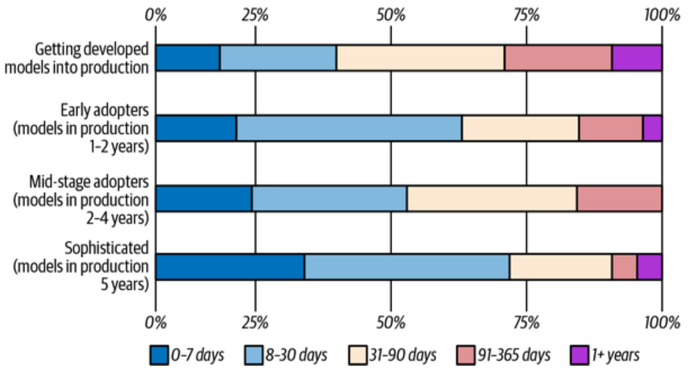
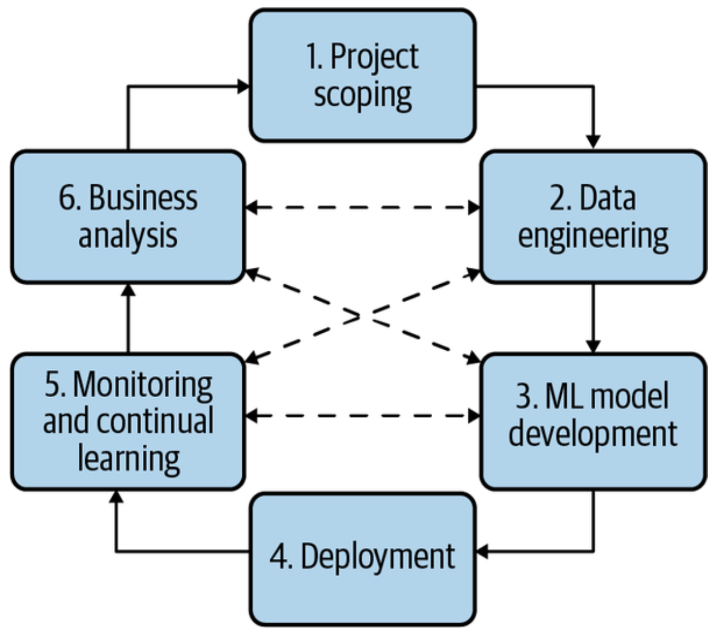
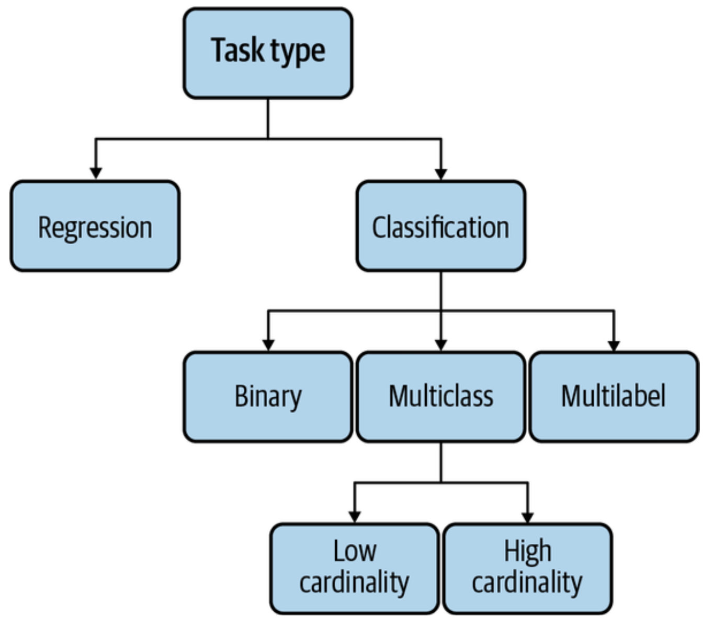
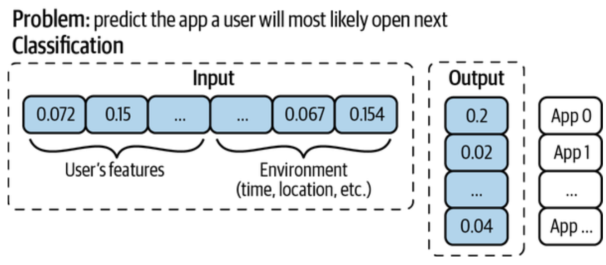
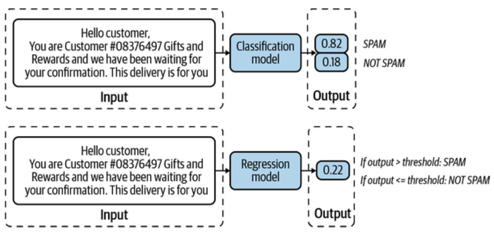
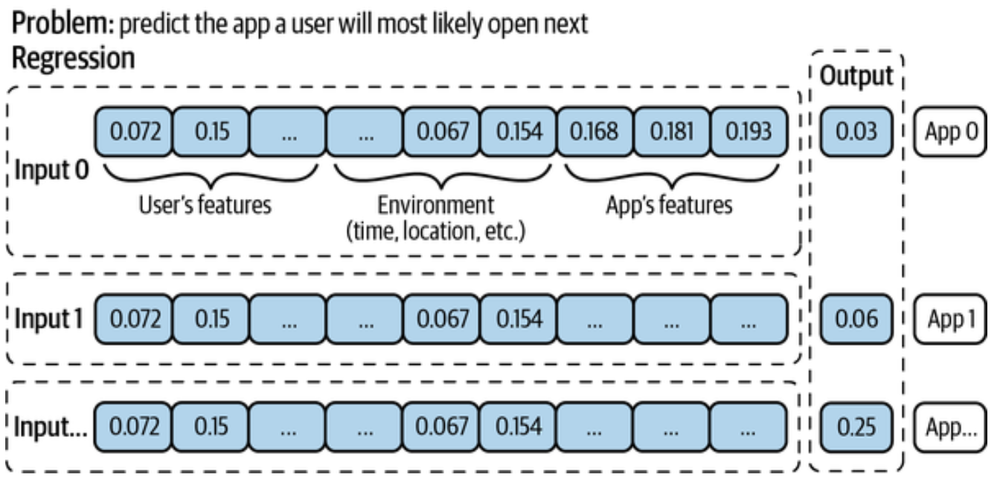
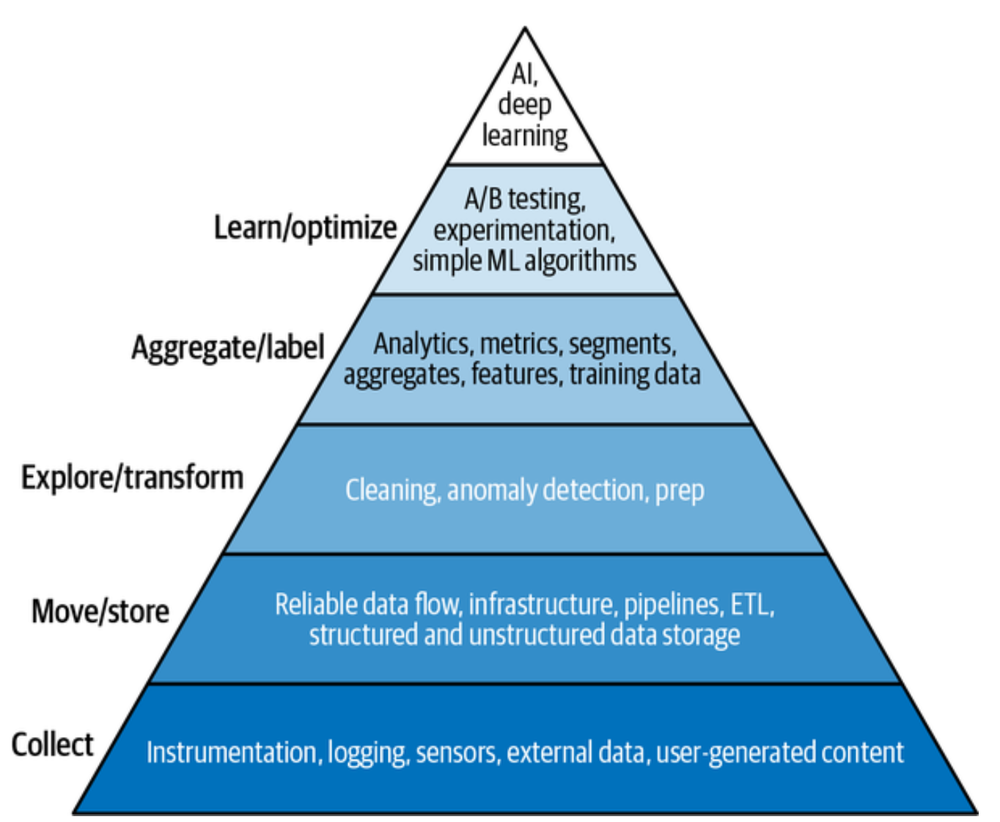

Machine Learning System
3316512 Pharmaceutical AI
Natapol Pornputtapong, PhD
Chulalongkorn University
11 Mar 2026
AI application

ML Systems vs. Traditional Software

Development vs. Production

Concerns in development
- Fairness is often an afterthought in research but a requirement in production
- Biased algorithms can discriminate at scale against minority groups
- Interpretability is required for users to trust the system and for developers to debug it
- Business leaders often prefer a human expert over a “black box” AI if the AI can’t explain its decision
- Only a small percentage of companies currently take steps to mitigate algorithmic bias
Engineering Challenges in ML
- Modern ML models can have billions of parameters, requiring massive RAM
- Deploying large models on edge devices is a major engineering challenge
- ML models often fail silently, making monitoring and debugging difficult
- Speed of inference is critical; a slow autocomplete model is useless
- Engineering challenges for models like BERT are being solved at a breakneck pace
Business and ML Objectives
- Most businesses only care about profit maximization
- ML metrics (like F1 score) must be translated into business metrics (like revenue)
- Ad click-through rates are popular because they map directly to revenue
- Netflix uses “take-rate” to bridge the gap between recommendations and streaming hours
- Experiments (A/B testing) are often needed to find the actual relationship between metrics
Returns on Investment (ROI)
- ML gain doesn’t happen overnight; Google has invested for decades
- ROI depends on the maturity stage of ML adoption
- Sophisticated companies can deploy models in under 30 days
- Early adopters spend more time on engineering and have higher cloud bills
- Efficiency increases as the ML pipeline matures
Adoption rate

4 requirements for production ML
- Reliability
- Scalability
- Maintainability
- Adaptability
Requirement: Reliability
- The system must perform correctly even in the face of faults
- Correctness is harder to define in ML than in traditional software
- ML models can fail silently, serving wrong predictions without crashing
- System health must be monitored to ensure it meets performance expectations
- Reliability includes handling hardware, software, and human errors
Requirement: Scalability
- Systems must handle growth in complexity, traffic, and model count
- Autoscaling is a standard cloud feature but can be tricky to implement
- Scalability involves resource scaling (GPUs/CPUs) and artifact management
- Managing thousands of models requires automated monitoring and retraining
- Handling growth requires reproducible code generation
Requirement: Maintainability
- Different roles (ML engineers, DevOps, SMEs) must collaborate using comfortable tools
- Documentation and versioning of code, data, and artifacts are essential
- Models must be reproducible so new contributors can build on old work
- Infrastructure should support cross-functional visibility
- Maintainability ensures that teams can identify and fix problems without finger-pointing
Requirement: Adaptability
- Systems must evolve quickly to handle shifting data and business needs
- Adaptability is tightly linked to maintainability
- The system should have capacity for discovering performance improvements
- Updates should happen without service interruption
- This requires infrastructure for continual learning and monitoring for shifts
The ML Lifecycle

Framing ML Problems
- A problem must be defined by inputs, outputs, and an objective function
- The difficulty of a task changes based on how it is framed
- Common task types include classification and regression
- A task can be reframed (e.g., house price prediction as classification buckets)
- Choosing the right framing can make a problem significantly easier to solve
Task types

Framing for Simple Solutions
- Reframing a task can avoid frequent retraining
- Instead of predicting a probability for every app on a phone (classification), use app features as input (regression)
- In the regression framing, adding a new app doesn’t require retraining from scratch
- This makes the model more scalable and flexible
- The output in the regression frame is a single value denoting likelihood of use
Examples

Examples

Examples

Objective Functions
- Guided by a loss function to minimize errors from wrong predictions
- In supervised learning, the model compares outputs to ground truth labels
- Common functions include RMSE for regression and cross-entropy for classification
- Choosing a function requires algebra knowledge, but most use standard ones
- The objective function is different from business objectives
Decoupling Conflicting Objectives
- Systems often have multiple goals, such as engagement vs. quality
- Conflicting objectives make it hard to rank items using a single model
- One approach combines losses into a weighted sum, but requires retraining to tune
- A better approach is to train separate models for each objective and combine scores
- Decoupling makes maintenance easier as different goals shift at different rates
The Role of Data

Quality over Quantity
- More data isn’t always better
- Incorrect labels in training data can hurt model performance
- Outdated data prevents the model from generalizing to current trends
- Success relies on managing and improving data quality
- Data scientists must be wary of poisoning or noise in their datasets
Specific Requirements
- EMA Reflection Paper on Artificial Intelligence
- Annex 11 Revision Draft document
- Annex 22 Draft
- GAMP 5 D11
- Supporting framework conditions (QRM, data integrity, change Management)